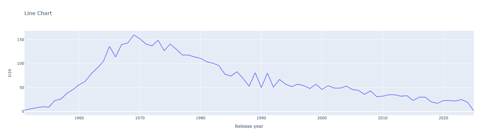
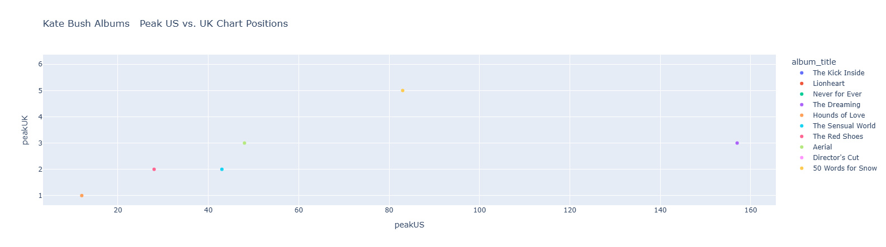

import pandas as pd
import matplotlib.pyplot as plt Visualizing Data
This lesson introduces three of the most popular Python libraries for data visualization: Pandas, Plotly, and Seaborn Each library offers unique capabilities for analyzing and presenting data. You will gain hands-on experience comparing these tools while developing skills to create insightful visualizations like bar charts, line charts, and scatterplots.
Data skills | concepts
- Pandas
- Plotly
- Seaborn
Learning objectives
- Compare and contrast Pandas, Plotly, and Seaborn for visualizing data in Python.
- Formulate a data-driven question and outline the steps needed to filter, aggregate, and visualize data effectively.
- Create and customize bar charts to compare categorical data.
- Illustrate trends and patterns over time using line charts.
- Explore relationships between two variables through scatterplots.
This tutorial is designed to support workshops hosted by The Ohio State University Libraries Research Commons. It assumes you already have a basic understanding of Python, including how to iterate through lists and dictionaries to extract data using a for loop. To learn basic Python concepts visit the Python - Mastering the Basics tutorial.
PANDAS
Pandas is powerful Python library designed to help you organize, explore and analyze in tables using Python. Pandas can be used to generate summary statistics and build basic visualizations.
Pandas integrates with Matplotlib to generate simple plots using the .plot() method. The kind = parameter specifies the type of chart to create:
| kind = | **Chart Type |
|---|---|
line |
line chart (default) |
bar or barh |
vertical or horizontal bar chart |
hist |
histogram |
box |
boxplot |
kde or density |
Kernel Denstity Estimation plot |
area |
area plot |
scatter |
scatterplot |
hex |
hexagonal bin plots |
pie |
pie charts |
📊 Bar Chart
Let’s build a bar chart that highlights the average U.S. peak chart positions for albums by 2025 Rock & Roll Hall of Fame inductees to explore visualizing data with Pandas.1
The syntax for building a Basic Pandas Chart is:
DataFrame.plot(*args, **kwargs)
Step 1. Import libraries
Pandas works alongside matplotlib libraries to visualize data.
Step 2. Read in files
We’ll use the rock_n_roll_performers.csv table from the Wikipedia page on Rock and Roll Hall of Fame inductees to explore plotting with Pandas. The Performers category honors recording artists and bands who have had a significant and lasting impact on the development and legacy of rock and roll. We’ll also enhance our analysis by linking this dataset with rock_n_roll_studio_albums.csv which contains studio album information of many of the inductees.
.read_csv()
performers=pd.read_csv('data/rock_n_roll_performers.csv', encoding="utf-8")
# A UnicodeDecodeError occurs after asking Pandas to read in rock_n_roll_studio_albums. Co-pilot suggests trying a difference encoding, like latin1
studio_albums=pd.read_csv('data/rock_n_roll_studio_albums.csv', encoding='latin1')Step 2. Merge datasets
After loading the performers and studio_albums tables using pd.read_csv, we can inspect the column headers using .columns.
performers.columnsstudio_albums.columnsBoth datasets share the columns artist and year, which could be used for merging. However, to avoid confusion after joining, we’ll first rename the header year in the performers dataset to year_inducted.
.rename()
performers=performers.rename(columns={'year':'year_inducted'})
performers.columnsThen, we’ll merge the two datasets using the shared artist column.
performers_albums=pd.merge(performers, studio_albums, on='artist')
performers_albums.columnsStep 3. Create and apply filters
Now that we’ve merged the inductee and album datasets, we can begin filtering the data to focus on specific trends or groups.
Before applying any filters, it’s important to confirm the data type of the year_inducted column in the performers_albums DataFrame. This ensures we can perform numerical comparisons or sorting without errors.
.dtypes
performers_albums['year_inducted'].dtypesWe can create and apply filter to isolate the 2025 inductees using the year_inducted field.
filter_variable=df[‘column’]==value
#First create the filter
_2025_inductees= performers_albums['year_inducted']==2025 filtered_df=df[filter_variable]
#Then apply the filter
performers_albums_filtered=performers_albums[_2025_inductees]
performers_albums_filteredStep 4. Aggregate data
Pandas supports a variety of basic summary statistics through build-in methods:
| Method | Description |
|---|---|
.count() |
number of observations |
.sum() |
histogram |
.mean() |
boxplot |
.medium() |
density plots |
.min() |
area plots |
.max() |
scatterplots |
mode() |
hexagonal bin plots |
std() |
pie charts |
.groupby()
To calculate statistics grouped by category—such as average chart positions by artist or year—we use the .groupby() method. This allows us to aggregate data based on one or more columns before applying summary functions.
performers_albums_filtered.groupby('artist')['peakUS'].mean()Step 5. Plot
The last step to build our bar chart is to add the .plot(*args, **kwargs) method with relevant arguments and keyword arguments.
First use the .sort_values(ascending=False) method first to sort the bars in descending order. Then .plot with the keyword arguments:
- kind = ‘bar’
- xlabel = ’’ (removes the redundant label on the x-axis)
- title = ‘Peak US Chart Position: Rock N Roll Hall of Fame Inductees’ (= newline)
performers_albums_filtered.groupby('artist')['peakUS'].mean().sort_values(ascending=False).plot(kind='bar', xlabel='', title='Average Peak US Chart Position: \n 2025 Rock N Roll Hall of Fame Inductees')📈 Line chart
Line charts reveal trends over time and at minimum require a date field and a measure. To create a line chart with Pandas, set the kind = parameter to line.
Create a line chart that shows the total number of albums released each year by all artists in the
performers_albums dataset.
- Identify relevant columns and data types
- Aggregate data and plot
Step 1. Identify relevant columns and data types
Before creating a chart, the first step is to identify which columns are needed for the visualization. Once those columns are selected, we’ll check their data types to ensure they are suitable for analysis and plotting.
performers_albums.columnsperformers_albums['Release date'].dtypesIn Pandas, dtype(‘O’) stands for object data type. This is a general-purpose type used when a column contains:
- Strings (most common)
- Mixed types (e.g., numbers and text)
- Python objects (less common)
So if you see dtype(‘O’) for a column, it usually means that column contains text or string values.
To convert Release date to year
performers_albums['Release year']=performers_albums['Release date'].dt.year
performers_albums['Release year']Step 2. Aggregate data and plot
Group the album titles by Release year and then count album_title and set .plot(kind=‘line’).
performers_albums.groupby('Release year')['album_title'].count().plot(kind='line', xlabel='', title='Line Chart')░ Scatterplot
Scatterplots are useful for exploring relationships between two or more numerical variables. In Pandas, you can create a scatterplot using the .plot() method by specifying the x and y keyword arguments.
Use the Pandas scatterplot documentation to create a scatterplot that visualizes the relationship between the Peak US and Peak UK chart positions for albums released by your favorite artist inducted into the Rock and Roll Hall of Fame.
BONUS: reverse the x and y axis.
carmen_ohio=open('carmen_ohio.txt', mode='r', encoding='utf-8').read()
# first 250 characters
#Step 1. Create and apply a filter for your favorite artist
favorite_artist=performers_albums['artist']=='Kate Bush'
kate_bush=performers_albums[favorite_artist]
#Step 2. Plot the x and y axis
kate_bush.plot.scatter(x='peakUS',y='peakUK')
#BONUS
plt.gca().invert_xaxis()
plt.gca().invert_yaxis()PLOTLY
The Plotly Open Source Graphing Library for Python is a robust and versatile Python library that offers over 40 types of interactive data visualizations—from basic bar and bubble charts to advanced 3D scatter and 3D surface plots. Plotly charts are fully interactive, enabling users to zoom, pan, hover for tooltips, and export visuals directly from the browser.
Before using Plotly, be sure to follow the installation instructions provided in the official guide: Getting Started with Plotly in Python
Let’s use plotly to build a bar, line, and scatterplot using the performers_albums DataFrame.
📊 Bar Chart
Build a Bar Chart showing the maximum U.S. peak chart position for any album released by 2025 Rock & Roll Hall of Fame inductees.
import plotly.io as pio
pio.renderers.default="notebook" # This statement is needed to display Plotly in html
#We already have a filtered DataFrame for the 2025 inductees. Since the highest chart position is 1, we need to tell Pandas to find the minimum peakUS chart position for each artist.
agg_performers_albums_filtered=performers_albums_filtered.groupby('artist', as_index=False)['peakUS'].min()
#Now we build our bar chart
fig=pio.bar(agg_performers_albums_filtered, x='artist', y='peakUS', title="Peak US Chart Position: 2025 Rock n Roll Hall of Fame Inductees", color='artist')
fig.show()

📈 Line chart
Create a line chart that shows the total number of albums released each year by all artists in the performers_albums dataset.
#We already converted 'Release date' to year in the code above. Now we tell Pandas to count the number of occurrences of each 'Year' using the .size() method
agg_for_line_performers_albums=performers_albums.groupby(['Release year'], as_index=False).size()
#Build the chart
fig2=pio.line(agg_for_line_performers_albums, x='Release year', y='size', title="Line Chart", markers=False)
fig2.show()
▒ Scatterplot
Create a scatterplot that visualizes the relationship between the Peak US and Peak UK chart positions for albums released by your favorite artist inducted into the Rock and Roll Hall of Fame.
#We already filtered the DataFrame for our favorite artist. Use this DataFrame to build the chart.
fig3=pio.scatter(kate_bush, x='peakUS', y='peakUK', color='album_title', title="Kate Bush Albums: Peak US vs. UK Chart Positions")
fig3.show()
SEABORN
Built on top of Matplotlib and seamlessly integrated with Pandas, the Seaborn library enhances the visual appeal of Python charts with minimal effort. Featuring built-in themes, concise syntax, and a rich gallery of customizable examples, Seaborn helps you create polisthed, publication-quality visualizations quickly and effectively.
📊 Bar Chart
Build a Bar Chart showing the maximum U.S. peak chart position for any album released by 2025 Rock & Roll Hall of Fame inductees.
# INSERT CODE HERE
import seaborn as sns
#Create bar chart
sns.set(style="whitegrid")
plt.figure(figsize=(10,6))
sns.barplot(x='artist', y='peakUS', data=agg_performers_albums_filtered)
# Add title and labels
plt.title("Peak US Chart Position \n 2025 Rock n Roll Hall of Fame Inductees")
plt.xlabel("")
plt.ylabel("Peak US chart position")📈 Line chart
Create a line chart that shows the total number of albums released each year by all artists in the performers_albums dataset.
Using the Seaborn library’s Emphasizing continuity with line plots tutorial with the seaborn.lineplot API documentation, create a line chart that shows the total number of albums released each year by all artists in the performers_albums dataset.
Format the chart to:
- Remove gridlines and borders
- Adjust the x and y axis labels
- Name the chart
#Line chart
#remove gridlines
sns.set(style="white")
#despine (i.e. remove borders)
sns.despine(top=True, right=True, left=True, bottom=True)
#Group and count number of release years using Pandas .size() method. Reset the index and name the reset index 'count'
released_albums_by_year=performers_albums.groupby(['Release year']).size().reset_index(name='count')
#Build chart
sns.lineplot(data=released_albums_by_year, x='Release year', y='count')
plt.title("Line Chart")
plt.xlabel("")
plt.ylabel("# albums released")▒ Scatterplot
Using the Seaborn library’s Visualizing statistical relationships tutorial with the seaborn.scatterplot API documentation, create a scatterplot that visualizes the relationship between the Peak US and Peak UK chart positions for albums released by your favorite artist inducted into the Rock and Roll Hall of Fame.
BONUS: reverse the x and y axis.
#We already filtered the DataFrame for our favorite artist. Use this DataFrame to build the chart.
sns.relplot(data=kate_bush, x='peakUS', y='peakUK', hue='album_title')Check out the Controlling figure aesthetics and Choosing color palettes tutorials to learn how to customize theme and fine-tune the appearance of your Seaborn visualizations.
Footnotes
Visit the Websites and APIs. Lesson 3. Wikipedia tutorial to learn how to extract tables from HTML using pandas.read_html.See the Websites and APIs. Lesson 4. iCite tutorial and Websites and APIs. Lesson 7. Crossref tutorial to learn how to use APIs to gather data.↩︎